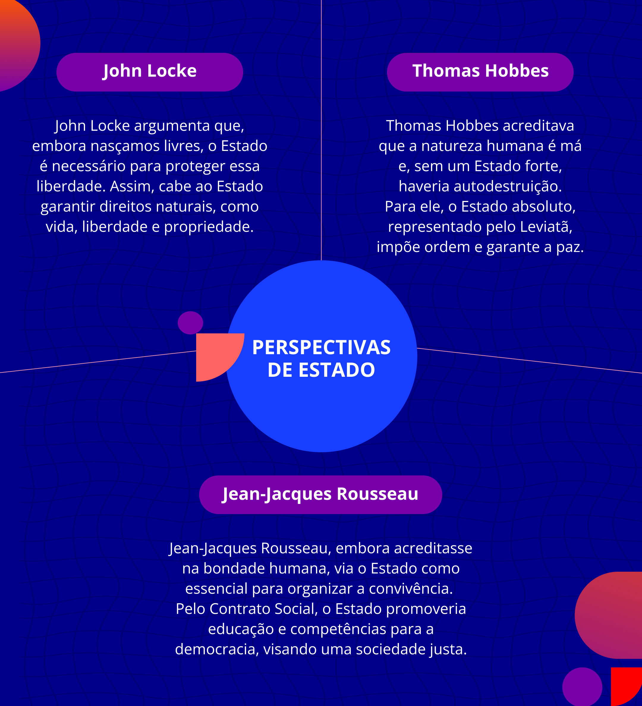

Democracia na EPT
Construção contínua a partir dos próprios desafios e possibilidades
As instituições de ensino foram surgindo ao longo da história com diferentes propósitos. Na escola formal criada por Carlos Magno, conhecido como Carlos, O Grande (Ex-imperador Romano-Germânico), em meados do século IX – e mesmo nas universidades que surgiram no século XI e XII –, entre outras características, estava posta a ideia de que o acesso não era necessário e nem possível para todos. Basta lembrarmos que até o século XV – ou o surgimento da imprensa –, a grande maioria das pessoas era analfabeta. Tanto nas tradições grega e romana, como também na tradição cristã, pilares da cultura ocidental, o acesso ao ensino formal era muito mais um privilégio do que algo próximo a um direito fundamental.
É necessário considerar que a instituição de EPT, é uma das primeiras instituições de ensino na história da humanidade que compreendem que a cidadania não é um privilégio ou uma forma de distinção humana, como defendiam Segundo Markoff (2013, p. 23-24), a “democracia era um sistema que incluía algumas pessoas com plenos direitos [...] – adultos, não crianças ou adolescentes. Homens, não mulheres – os livres, não os escravos e os cidadãos, não estrangeiros”.
Ao contrário, a EPT apresenta para o mundo uma grande novidade: a perspectiva de que a cidadania é algo a ser construído por todos, o tempo todo e para todos. Não é algo seletivo e excludente: a cidadania é atribuída, em tese, a todos os indivíduos, pela simples condição de serem humanos. Se, em épocas anteriores, a distinção definia quem poderia ser um cidadão, agora cidadão significa a ausência de qualquer distinção excludente. Não há democracia ou cidadania como distinção de alguns e para alguns, ela deve ser construída e refletida por todos o tempo todo. Esse conceito se consolida, especialmente nos países democráticos, após a Declaração Universal dos Direitos Humanos de 1948.
.jpg)
Título: Diálogo, controvérsia e construção da cidadania
Fonte: Gaia Schüler (2023a).
Se considerarmos a posição de (2001; 2007) sobre totalitarismo, é exatamente sobre isto que ela nos alerta: a falta de reflexão produz a antidemocracia e o totalitarismo. Para evitar isso, (2015), filósofa norte-americana, sugere que possamos construir, ad infinitum , competências e habilidades com as novas gerações para a produção, explicação, revisão e consolidação dos espaços democráticos em todas as instituições. Portanto não basta sermos as primeiras instituições do mundo a buscar equidade e acesso de todos a um ensino de qualidade. É preciso criar, em nossas instituições, estratégias de quebra do protocolo de que cidadania é concessão a poucos, de que a escravidão é algo natural e de que a falta de acesso é inevitável. Como postulou Georg Hegel em sua Filosofia da História (1999): precisamos aprimorar nossas instâncias decisórias e de participação para consolidar essa visão e práxis .
Em síntese, não há democracia e nem democratização sem comunhão de propósitos. Um governo tirano ou a tirania de um gestor que flerta com o erro por não considerar o bem comum, assim como um governo de muitos ou de todos que não considera o propósito ou o sentido da lei, incorre no mesmo dilema: a imolação do bem comum em função de um desvio de propósitos, a subversão dos meios e fins e a fragmentação das perspectivas de fortalecimento dos laços sociais mínimos e necessários para uma vida justa e digna.
A democracia na EPT é justamente para que todos os processos e ações vinculadas ao tripé ensino, pesquisa e extensão produzam, efetivamente, a em todos os níveis de ensino. A democracia não se constitui apenas por diálogos (mais de um discurso), ao contrário, ela deve ser construída por meio da dialogomai (discurso que exige controvérsia), com espaço para a oposição. Democracia como processo e não como produto requer controvérsia contínua e representatividade sólida de todos os segmentos para não se tornar totalitária, arbitrária e desvirtuada. Por isso, não se pode pensar em democratizar a gestão na EPT sem tangenciar o tema do trabalho.
A referência ao trabalho, na sua relação com a Educação, também tem servido de pilar teórico e político-pedagógico quando associado a outro conceito, o de qualidade social, o de bússola para a democracia escolar, a participação, a gestão social, o acesso, permanência e êxito de alunos, formados como cidadãos reflexivos e críticos
Dessa forma, o entendimento de “trabalho” não pode ser reduzido à lógica de exploração do capital ou mesmo da riqueza da mais valia, assim como não pode ser perpetuado como tortura ou sofrimento – como o seu sentido etimológico tripalium, que se refere a um instrumento de tortura. Na EPT, o trabalho é uma forma de o indivíduo produzir-se como humano e humanizar-se na relação com o fazer, junto, com e para os outros, não apenas uma maneira de dominar e explorar a natureza e o outro. O sentido filosófico do trabalho é, primeiramente, produzir sentido e valor no fazer para a própria condição subjetiva e humana.
Para a filósofa Martha Nussbaum (2015), a democracia não é um processo natural entre os humanos. Não podemos esperar das pessoas competências e habilidades, a priori , que possam nos conduzir para um regime democrático: esses conhecimentos precisam ser ensinados, motivados, cultivados e constantemente revisados.
Portanto, discorrer sobre o trabalho como referência para a formação e a democracia implica abordar questões complexas. Em primeiro lugar, o significado do trabalho e suas relações com o processo de hominização. Mas, também, a centralidade do trabalho na estruturação da sociedade capitalista. Com isso, tem-se a discussão sobre o papel da educação em face das vicissitudes da reprodução e destruição de forças produtivas no capitalismo, incluindo a própria devastação ambiental. São exigências colocadas pelo mundo do trabalho à educação e sobre suas possibilidades e limitações para realizá-las
Na modernidade, tivemos novas acepções sobre o sentido e o papel do Estado como substituição à monarquia e ao controle religioso na política. Em uma perspectiva jusnaturalista, John Locke propôs uma visão de que o Estado é uma organização necessária para proteger a liberdade individual – considerando que nascemos naturalmente livres. De modo diferente, Thomas Hobbes defendeu que a natureza humana é de ordem má e, nesse sentido, um Estado forte e ilimitado (Leviatã) seria a garantia de que os homens não se destruíssem mutuamente.
Em contraposição, Rousseau, o pai das ciências sociais, argumenta que a natureza humana é boa e a função do Estado nada mais é do que estabelecer um Contrato Social que garanta a melhor convivência e relação entre os humanos. Nessa perspectiva, a educação é o caminho inevitável para esse intento, conforme nos ilustra a obra Emílio (1995). De diferente, Rousseau sugere que o Estado não tenha apenas esse papel de monstro bíblico para inibir a luta de uns contra os outros, como sugeriu Hobbes, mas que possua, por meio da educação, o papel de potencializar as convicções, competências e habilidades necessárias à democracia. Veja a seguir um resumo dessas perspectivas de Estado:

Título: Perspectivas de Estado
Fonte: Prosa (2024h).
Lembrando que, nas democracias grega antiga e moderna, notamos pontos divergentes e semelhantes. Como destacou Markoff (2013), a primeira estava mais vinculada a um território específico, enquanto a segunda, a uma ideia de nação – não necessariamente de cidade-estado, como no entendimento grego.
Em segundo lugar, democracia (grega) tinha alguma relação com o modo como um determinado território geográfico era governado. Para os atenienses, era a cidade-estado. No século 18, era o estado nacional. Esta noção se mantém. Poderíamos discorrer sobre o que significa uma família democrática, ou um local de trabalho democrático ou, ainda, uma universidade democrática. Porém, se demando a estudantes que citem democracias do mundo, eles começam indicando países